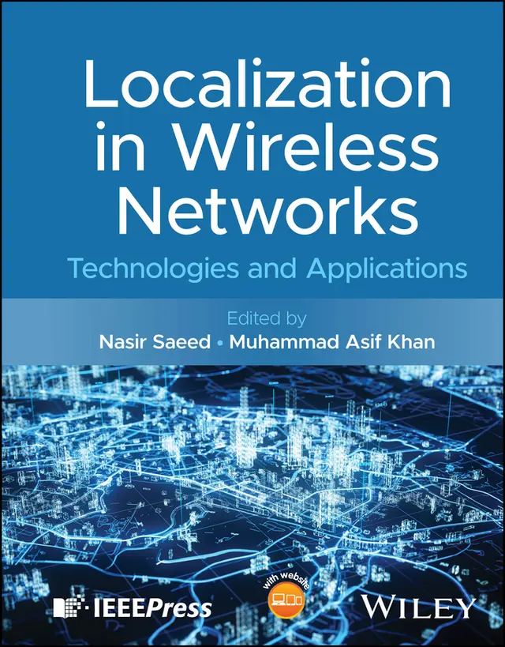

Hi, I'm Asif.
“Make science simple.”
I am a Senior Applied Scientist at Amazon (Seattle, WA). Before joining Amazon, I was a Sr. Research Associate at Louisiana State University (USA) and a Research Scientist at Qatar Mobility Innovations Center (Doha, Qatar). I hold a Ph.D. in electrical engineering from Qatar University (2020), an M.Sc. from UET Taxila (2013), and a B.Sc. from UET Peshawar (2009). I am the recipient of the Postdoctoral Research Award (PDRA) from the Qatar National Research Fund (2022). I have published over 60 peer-reviewed joural and conference papers. I am a Senior Member of IEEE and a member (CEng) of IET (UK). I am serving as Associate Editor of IEEE TNNLS, IEEE TCE, IEEE TTS, and IEEE SPL.

Our New textbook has been published: Localization in Wireless Networks: Technologies and Applications published by IEEE & Wiley.Designed and shipped loss prevention and theft prediction ML pipelines in production for Amazon's middle-mile supply chain. Covered the full lifecycle from data pipeline to model training and deployment, collaborating directly with operations teams to define workflow requirements and track business outcomes.
Real-time crowd counting system using PTZ cameras and custom CNN models, deployed on NVIDIA Jetson Nano with TensorRT for low-latency inference. Enabled queue estimation at metro entry points for crowd control via live dashboards, as part of QMIC's Falcon-I smart city platform.
AI system to detect faulty street pole lights in real-time in Lusail smart city. Custom-annotated dataset from local field deployments. Inference optimized for Jetson deployment and integrated into a maintenance vehicle for city surveillance.
Prototype multi-modal drone detection using ReSpeaker mic array, Ettus USRP RF sensors, and Jetson Xavier for vision. Combined acoustic, RF, and visual modalities via early fusion. Integrated attribute-based encryption (ABE) for secure drone alert propagation.
Collected and fused accelerometer, gyroscope, GPS, video, and CAN bus data to build a real-time classifier for road surface conditions (potholes, bumps). Deployed ML models on Android; integrated output with OpenStreetMap via a cloud dashboard.
Acoustic-based system to detect and localize noisy vehicles using signal processing (ZCR, RMS, FFT) and ML models (SVM, RF, LSTM). Integrated a multi-microphone array with GCC-PHAT and SRP-PHAT algorithms for sound source localization in real road environments.
-
2025
Revisiting the Intrusion Detection in In-Vehicle NetworksIEEE Trans. on Intelligent Transportation Systems (T-ITS)
-
2025
Trust and Privacy in Commercial and Recreational Drone NavigationIEEE Transactions on Technology and Society
- 2025
-
2025
Crowd Counting at the Edge using Weighted Knowledge DistillationNature Scientific Reports
-
2024
LiDAR in Connected and Autonomous Vehicles - Perception, Threat Model, and DefenseIEEE Transactions on Intelligent Vehicles
-
2024
Deep Learning in the Fast Lane: Advanced Intrusion Detection for Intelligent Vehicle NetworksIEEE Open Journal of Vehicular Technology
-
2024
Object Depth and Size Estimation using Stereo-Vision and Integration with SLAMIEEE Sensors Letters video
-
2023
LCDnet: A Lightweight Crowd Density Estimation Model for Real-time Video SurveillanceJournal of Real-Time Image Processing
- 2022
-
2022
Distributed Inference in Resource-Constrained IoT for Real-Time Video SurveillanceIEEE Systems Journal
-
2022
CODE: Computation Offloading in D2D-Edge System for Video StreamingIEEE Systems Journal
-
2022
ML-based Handover Prediction and AP Selection in Cognitive Wi-Fi NetworksJournal of Network and Systems Management
-
2020
Real-time Throughput Prediction for Cognitive Wi-Fi NetworksJournal of Network and Computer Applications
- 2019
- 2019
More on YouTube.
-
Curriculum Learning for Monocular Depth Estimation in Disaster Management using UAVs
Jorge Turriate, Master M2 EEEA MMVAI, Université d'Évry Paris-Saclay, France (2025) - M.Phil Thesis, Samiullah, AWKUM, Mardan, Pakistan (2023–24)
- Mentor at GAIN Mentorship Program, Germany, 2024/25
- Summer Internship Supervisor at Qatar Mobility Innovations Center (QMIC), 2022–25
- Research Mentor at Qatar University Young Scientist Center (QUYSC), 2023–24
- Associate Editor, IEEE Signal Processing Letters (SPL) - Aug 2025–Present
- Associate Editor, IEEE TNNLS - Jan 2025–Present
- Associate Editor, IEEE Trans. Consumer Electronics (TCE) - Jul 2024 – Jun 2026
- Associate Editor, IEEE Trans. Technology and Society (TTS) - May 2024 – May 2026
- Associate Editor, IEEE Future Directions Newsletter - Apr 2021–Present
- Grant Evaluator, Research Foundation Flanders (FWO), Belgium
- Expert Reviewer, European Science Foundation
- Program Technical Committee Chair - IEEE ICFTSS 2024, CompAuto 2023–24, CRET 2024
- Tutorial Chair, IEEE GEM 2023
- Workshop Chair, IOROL 2025, 6GIoTT 2022
- Area Chair, IJCNN 2025
- PC Member (ML/AI), NeurIPS 2024, WACV 2025, IJCNN 2025, IEEE BigData 2020, CVIPPR 2024
- PC Member (Comms), IEEE ICC 2021–25, Globecom 2024–25, VTC 2023, CCNC 2021–25, ICCE 2025–26, ICASSP 2020 & 2024, and more
- IEEE Transactions: TAI, TNNLS, TMLCN, TMC, TVT, T-ITS, TETC, SMC, TCE, TCSVT, TDSC, TII
- IEEE Journals: COMST, COMMAG, OJCOMS, OJVT, WCM, WCL, IOT, ISJ, Sensors, Access
- Other: Nature Scientific Reports, IJCV, ACM Computing Surveys, FGCS, IET Communications
- Verified reviews: Web of Science
- IEEE VTS Committee on Autonomous Vehicles
- IEEE CTSoc Internet of Things, Edge Computing (IOT)
- IEEE CTSoc Machine Learning, Deep Learning & AI in CE (MDA)
- IEEE CTSoc Consumer Communications Networks and Connectivity (CCN)